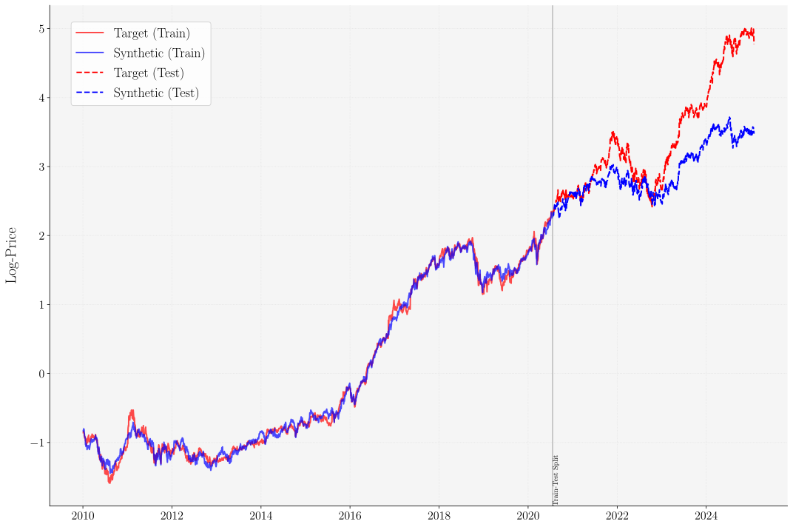
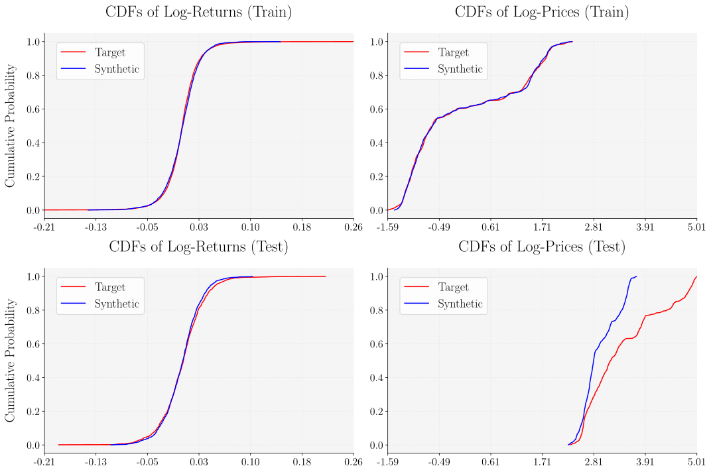
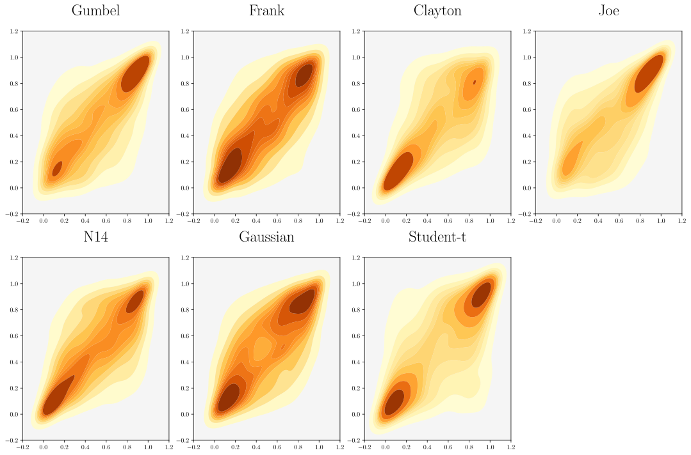
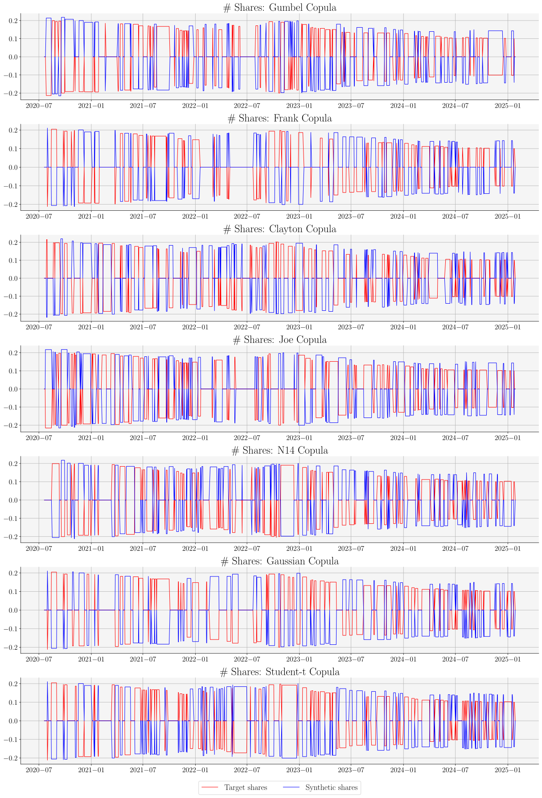
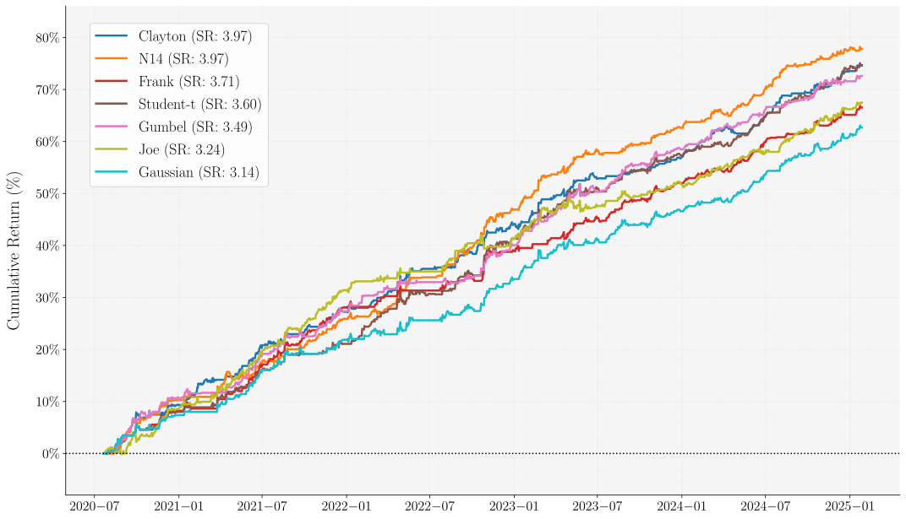

Pairs-Trading a Sparse Synthetic Control
Jesus Villota Miranda
Introduction
Motivation
- Financial markets exhibit transient price divergences between economically linked assets
- Traditional pairs trading strategies face significant limitations:
- Poor adaptation to structural breaks
- Inability to model complex dependencies
- Limited robustness across dynamic market regimes
Research Gap
- Need for strategies that:
- Systematically identify latent economic linkages
- Mitigate overfitting in high-dimensional asset pools
- Adapt to changing market conditions
- Capture non-linear and tail dependencies
Our Approach
- Novel framework integrating:
- Sparse synthetic control methods
- Copula-based dependence modeling
- Designed to enhance:
- Strategy adaptability
- Risk management capabilities
- Performance stability
Key Methodological Components
- Sparse Synthetic Control
- Constructs parsimonious synthetic asset
- Employs \(\ell_1\)-regularized least squares optimization
- Automatically selects sparse subset from broad donor pool
- Maintains interpretability and computational efficiency
- Copula-Based Dependence Framework
- Captures non-linear relationships between assets
- Models tail dependencies beyond linear correlation
- Adapts to complex market dynamics
Trading Signal Generation
- Based on relative mispricing between target and synthetic assets
- Employs cumulative mispricing index that:
- Accumulates signals over time
- Resets after position closures
- Isolates episodic trading opportunities
- Disciplined entry rules require concurrent misalignment signals
- Designed to filter market noise
Literature Review
Foundational Approaches
Classical Pairs Trading
- Gatev et al. (2006): First comprehensive academic study
- Documented 11% annual excess returns (1962-2002)
- Established distance-based methodology
- Elliott et al. (2005): Theoretical framework
- Mean-reverting Gaussian Markov chain model
- EM algorithm for parameter estimation
Empirical Validations
- Chen et al. (2019): Short-term reversals
- Do et al. (2010): Performance in turbulent markets
- Bowen et al. (2014): UK market analysis
- Krauss (2016) & Rad (2016): Large-scale assessments
- Performance comparisons across methodologies
- Trade frequency and convergence differences
Key Methodological Streams
Cointegration Approach
- Vidyamurthy (2004): Seminal application to equity markets
- Caldeira (2013): Brazilian market application
- Huck (2014): Outperformance vs. distance methods
- Cartea (2015): Dynamic investment strategies
- Lintilhac (2016): Cryptocurrency applications
Copula-Based Methods
- Min (2010): Bayesian inference for pair-copulas
- Stander (2013): Mispricing detection framework
- Liew (2013) & Xie (2016): Superior tail dependencies
- Krauss (2017) & Zhi (2017): Adaptive thresholds
- Recent extensions:
- Mixed copulas (Silva, 2023)
- ARMA-GARCH integration (Wang, 2023)
- Specialized cryptocurrency applications (Tadi, 2025)
Emerging Approaches
Advanced Modeling Techniques
- Do (2006): Stochastic residual spread models
- Zeng (2014): Threshold-based mean-reversion
- Machine Learning Integration:
- OPTICS clustering (Sarmento, 2020)
- Deep reinforcement learning (Roychoudhury, 2023)
- Automated pair selection (Han, 2023)
- Graphical matching (Qureshi, 2024)
Synthetic Control Methods
- Alexander (1999, 2002): Cointegration for tracking
- Alexander (2005a, 2005b):
- Enhanced indexing strategies
- Market regime adaptations
- Recent Developments:
- Sparse solutions (Shu, 2020)
- Machine learning for dynamic selection (Bradrania, 2021)
- Convex-concave optimization (Johansson, 2024)
Research Positioning
Our Contribution - Integrates sparse synthetic control with copula-based dependence modeling - Addresses limitations of traditional approaches - Enhances adaptability to structural breaks and complex dependencies - Provides systematic framework for high-dimensional asset pools
Methodology
Sparse Synthetic Control
- Let \(\mathbf{y} = [y_t]_{t=1}^T\) be the log-price of target asset
- Let \(\mathbf{X} = [x_{1t}, ..., x_{Nt}]_{t=1}^T\) be the log-prices of donor assets
- Build synthetic asset \(\mathbf{y}^*\) as:
\[ y_t^* = \sum_{i=1}^N w_i^* x_{it} \quad \text{for } t=1,...,T \]
- weights \(\mathbf{w}^*=[w_1^*, ..., w_N^*]'\) solve:
\[ \mathbf{w}^* = \arg\min_{\mathbf{w} \in \mathbb{R}^N} \left\{\sum_{t=1}^T \left(y_t - \sum_{i=1}^N w_i x_{it}\right)^2 + \lambda\|\mathbf{w}\|_1\right\} \quad \text{s.t.} \quad \mathbf{1}^\top \mathbf{w} = 1 \]
Key Features
- \(\ell_1\) Regularization (LASSO)
- Induces sparsity through non-differentiability at origin
- Automatically selects most relevant assets
- Optimization Properties
- Unique solution (convex problem)
- Direct sparsity control via \(\lambda\)
- Portfolio interpretation (\(\mathbf{1}^\top \mathbf{w} = 1\))
- Implementation
- Support identification via thresholding: \[ \mathcal{I} = \{i \in \{1,...,N\} : |w^*_i| > \epsilon\} \]
- Efficient solution via proximal algorithms
Empirical Application
- Data: S&P500 daily adjusted-close prices
- Target: NVIDIA (NVDA)
- Period: Jan 2010 - Jan 2025
- Split: 70% training, 30% testing
- Result: 27 stocks selected
Synthetic Control Model Weights
| Ticker | Company | Weight (%) |
|---|---|---|
| AME | Ametek | 41.08 |
| LUV | Southwest Airlines | 33.31 |
| TFC | Truist Financial | 25.60 |
| AEP | American Electric Power | 21.69 |
| ADM | Archer Daniels Midland | 20.56 |
| RSG | Republic Services | 18.42 |
| AXP | American Express | 18.10 |
| LLY | Lilly (Eli) | 14.74 |
| C | Citigroup | 9.67 |
| VRSN | Verisign | 7.77 |
| MTB | M&T Bank | 7.38 |
| FE | FirstEnergy | 7.16 |
| FIS | Fidelity National Info | 5.21 |
| PARA | Paramount Global | 4.48 |
| Ticker | Company | Weight (%) |
|---|---|---|
| TXT | Textron | 2.21 |
| STX | Seagate Technology | 0.26 |
| BIIB | Biogen | 0.16 |
| NFLX | Netflix | -1.04 |
| FDX | FedEx | -2.39 |
| UDR | UDR, Inc. | -3.95 |
| V | Visa Inc. | -5.43 |
| CNP | CenterPoint Energy | -7.75 |
| MS | Morgan Stanley | -16.21 |
| NI | NiSource | -16.35 |
| WMT | Walmart | -16.65 |
| UNP | Union Pacific | -25.77 |
| ADSK | Autodesk | -42.25 |
| Total | 100.00 | |
Target vs Synthetic Log-Prices
Copula-based Modeling
- Traditional pairs-trading approaches rely on:
- Linear correlation
- Cointegration measures
- Limitations:
- Restrictive assumptions about joint distributions
- Poor performance during market stress
- Miss asymmetric tail dependencies
- Solution: Copula-based dependence modeling
- Decouples marginal distributions from joint dependence
- Captures non-linear interactions
- Models time-varying dependencies
- Quantifies mispricing probabilities
Sklar’s Theorem
- Let \((\Omega, \mathcal{F}, \mathbb{P})\) be a probability space.
- Let \(R, R^*: \Omega \to \mathbb{R}\) be RVs representing target and synthetic log-returns.
- Let \(F_R\) and \(F_{R^*}\) denote their respective cumulative distribution functions (CDFs).
Then, for the joint CDF \(F_{R,R^*}\), there exists a copula \(C: [0,1]^2 \to [0,1]\) s.t.: \[F_{R,R^*}(r,r^*) = C(F_R(r), F_{R^*}(r^*)) \quad \forall r,r^* \in \mathbb{R}\]
If \(F_R\) and \(F_{R^*}\) are continuous, then \(C\) is unique.
- Conversely, if \(C\) is a copula and \(F_R\), \(F_{R^*}\) are CDFs, then \(F_{R,R^*}\) defined above is a joint CDF with margins \(F_R\) and \(F_{R^*}\).
- When uniqueness holds, by the Probability Integral Transform:
\[ C(u,v) = \mathbb P( F_R(R) \leq u, F_{R^*}(R^*) \leq v) \quad \text{for} \quad (u,v)\in[0,1]^2 . \]
- When it exists, the copula density \(c:[0,1]^2\to\mathbb R_+\) is given by
\[ c(u,v) = \frac{\partial^2 C(u,v)}{\partial u \partial v}, \]
- Then, the joint density can be decomposed as:
\[ f_{R,R^*}(r,r^*) = c(F_R(r), F_{R^*}(r^*)) f_R(r)f_{R^*}(r^*) \]
Marginal Distribution Estimation
Compute log-returns: \[ r_t = y_t - y_{t-1} \quad \text{and} \quad r_t^* = y_t^* - y_{t-1}^* % \quad \quad t=2,...,T \]
Estimate ECDFs: \[\begin{align} \hat{F}_{R}(r) &= \frac{1}{T-1} \sum_{t=2}^T \mathbb{I}(r_t \leq r) \\ \hat{F}_{R^*}(r^*) &= \frac{1}{T-1} \sum_{t=2}^T \mathbb{I}(r_t^* \leq r^*) \end{align}\]
Transform to uniforms: \[ u_t = \hat{F}_R(r_t) \quad \text{and} \quad v_t = \hat{F}_{R^*}(r_t^*) \]
CDF Scatterplot: Returns Vs. Prices

Empirical CDFs: Returns Vs. Prices
Maximum Likelihood Estimation
For each copula family \(\mathcal{C} = \{C_\theta : \theta \in \Theta\}\), estimate parameters via:
\[\hat{\theta} = \arg\max_{\theta \in \Theta} \ell(\theta | \mathbf{u,v})\]
where the log-likelihood is:
\[\ell(\theta| \mathbf{u,v}) := \sum_{t=2}^T \ln c_\theta(u_t, v_t)\]
and \(c_\theta(u,v)\) is the copula density:
\[c_\theta(u,v) = \frac{\partial^2 C_\theta}{\partial u \partial v}(u,v)\]
Elliptical Copulas
Gaussian Copula: \(\Theta = \{\rho \in (-1,1)\}\) \[c_\rho^{Gauss}(u,v) = \frac{1}{\sqrt{1-\rho^2}} \exp\left(-\frac{\zeta_u^2 + \zeta_v^2 - 2\rho\zeta_u\zeta_v}{2(1-\rho^2)} + \frac{\zeta_u^2 + \zeta_v^2}{2}\right)\] where \(\zeta_u = \Phi^{-1}(u)\), \(\zeta_v = \Phi^{-1}(v)\)
Student-t Copula: \(\Theta = \{\rho \in (-1,1), \nu > 2\}\) \[c_{\rho,\nu}^{t}(u,v) = \frac{\Gamma(\frac{\nu+2}{2})\Gamma(\frac{\nu}{2})}{\sqrt{1-\rho^2}\Gamma(\frac{\nu+1}{2})^2} \frac{(1 + \frac{\zeta_u^2 + \zeta_v^2 - 2\rho\zeta_u\zeta_v}{\nu(1-\rho^2)})^{-(\nu+2)/2}}{\prod_{i\in\{u,v\}} (1 + \frac{\zeta_i^2}{\nu})^{-(\nu+1)/2}} \] where \(\zeta_u = t_\nu^{-1}(u)\), \(\zeta_v = t_\nu^{-1}(v)\)
Elliptical Copulas
- Gaussian
- Symmetric dependence
- Light tails
- Student-t
- Symmetric dependence
- Heavy tails
Archimedean Copulas
For generator function \(\psi_\theta\), \[C_\theta(u,v) = \psi_\theta(\psi_\theta^{-1}(u) + \psi_\theta^{-1}(v))\]
| Family | Parameter Range | Generator Function |
|---|---|---|
| Clayton | \(\Theta = (0, \infty)\) | \(\psi_\theta(t) = (1 + t)^{-1/\theta}\) |
| Gumbel | \(\Theta = [1, \infty)\) | \(\psi_\theta(t) = \exp(-t^{1/\theta})\) |
| Frank | \(\Theta = \mathbb{R}\setminus\{0\}\) | \(\psi_\theta(t) = -\frac{1}{\theta}\ln(1 - (1 - e^{-\theta})e^{-t})\) |
| Joe | \(\Theta = [1, \infty)\) | \(\psi_\theta(t) = 1 - (1 - e^{-t})^{1/\theta}\) |
Archimedean Copulas
- Clayton
- Lower tail dependence
- Gumbel
- Upper tail dependence
- Frank
- Symmetric, no tail dependence
- Joe
- Strong upper tail dependence
Mixed Copulas
- N14: Rotated Clayton-Gumbel mixture with \(\Theta \subset \mathbb{R}^2_+\)
Copula Density Heatmaps
Model Selection
Information Criteria:
\[ \begin{array}{ll} \text{AIC} &= 2k - 2\ell(\hat{\theta}|\mathbf{u,v}) \\ \text{SIC} &= k\ln(T-1) - 2\ell(\hat{\theta}|\mathbf{u,v}) \\ \text{HQIC} &= 2k\ln(\ln T-1) - 2\ell(\hat{\theta}|\mathbf{u,v}) \end{array} \]
Key Findings: - Student-t copula provides best fit - Symmetric dependence structure dominates - Heavy tails are significant - Asymmetric copulas perform poorly
Copula Fitting Results
| Copula | SIC | AIC | HQIC |
|---|---|---|---|
| Joe | -671.50 | -677.39 | -675.26 |
| Clayton | -1168.92 | -1174.80 | -1172.67 |
| Gumbel | -1210.02 | -1215.90 | -1213.78 |
| Frank | -1212.68 | -1218.56 | -1216.43 |
| Gaussian | -1337.69 | -1343.57 | -1341.44 |
| N14 | -1425.18 | -1431.06 | -1428.94 |
| Student-t | -1427.05 | -1432.94 | -1430.81 |
Trading Strategy
Pairs Trading via Mispricing Indices
- Approach adapted from Xie et al. (2016)
- Uses conditional probabilities of daily returns as a mispricing measure
- In our setting: trade target asset Vs. its synthetic counterpart
- Dollar-neutral strategy captures price divergence/convergence
- Accounts for dynamic dependence structure through copula model
Mispricing Index (MI)
Two conditional mispricing indices
\(MI_t^{R \mid R^*}\Rightarrow\) How “mispriced” is the target asset today conditional on today’s synthetic return? \[ MI_t^{R \mid R^*} := \mathbb{P}(R_t \leq r_t \mid R_t^* = r_t^*) = \frac{\partial C_{\hat{\theta}}(F_R(r_t), F_{R^*}(r_t^*))}{\partial F_{R^*}(r_t^*)} \]
- \(MI_t^{R^* \mid R}\Rightarrow\) How “mispriced” is the synthetic asset today conditional on today’s target return?
\[ MI_t^{R^* \mid R} := \mathbb{P}(R_t^* \leq r_t^* \mid R_t = r_t) = \frac{\partial C_{\hat{\theta}}(F_R(r_t), F_{R^*}(r_t^*))}{\partial F_R(r_t)} \]
Cumulative Mispricing Index (CMI)
- Individual MI reflects only instantaneous view
- Solution:
- Accumulate signals over time to track persistent mispricing
- Reset them to zero after position is closed to prevent stale signals
- This defines a Cumulative Mispricing Index (CMI) for each asset:
\[\begin{align} \mathrm{CMI}^{R}_{t} &= \begin{cases} \mathrm{CMI}^{R}_{t-1} + (MI_t^{R\mid R^*} - 0.5), & \text{if no position reset at time } t,\\ 0, & \text{if a position is closed at } t, \end{cases} \\[1.em] \mathrm{CMI}^{R^*}_{t} &= \begin{cases} \mathrm{CMI}^{R^*}_{t-1} + (MI_t^{R^*\mid R} - 0.5), & \text{if no position reset at time } t,\\ 0, & \text{if a position is closed at } t. \end{cases} \end{align}\]
where \(CMI_0^R = CMI_0^{R^*} = 0\).
Trading Logic - Signal Generation
- “Or-Or” Logic: Proposed by Xie et al. (2016)
- Trades are initiated when either asset is shows mispricing
- Positions are closed when either asset corrects
- “And-Or” Logic: Proposed by Rad et al. (2016)
- Requires concurrent signals from both assets to open positions
- Mispricing correction in either asset triggers position closure
- This logic is more conservative & yields more robust performance
- Parameters:
- Entry thresholds: \((D_l, D_u) = (-0.6, 0.6)\)
- Stop-loss boundaries: \((S_l, S_u) = (-2, 2)\)
Trading Rule
Trading Rule given the current CMIs (\(\mathrm{CMI}_t^R\), \(\mathrm{CMI}_t^{R^*}\)) and previous signal (\(TR_{t-1}\)):
\[\begin{align*} &TR_t(\text{CMI}_t^R, \text{CMI}_t^{R^*}, TR_{t-1}; D_l, D_u, S_l, S_u) = \\[0.2em]\nonumber &\begin{cases} +1 & \text{if} ~ (\text{CMI}_t^R \leq D_l ~\text{and}~ \text{CMI}_t^{R^*} \geq D_u) \\ -1 & \text{if} ~ (\text{CMI}_t^R \geq D_u ~\text{and}~ \text{CMI}_t^{R^*} \leq D_l) \\ 0 & \text{if}~ \begin{cases} \biggl\{ TR_{t-1}=1 ~~~\text{and}~ \bigl[ (\underbrace{\text{CMI}_t^R\geq 0 ~\text{or}~ \text{CMI}_t^{R^*}\leq 0}_{\text{take profit}}) ~\text{or}~ (\underbrace{\text{CMI}_t^R\leq S_l ~\text{or}~ \text{CMI}_t^{R^*}\geq S_u}_{\text{stop loss}}) \bigr] \biggr\} ,\text{or} \\ \biggl\{ TR_{t-1}=-1 ~\text{and}~ \bigl[ (\underbrace{\text{CMI}_t^R\leq 0 ~\text{or}~ \text{CMI}_t^{R^*}\geq 0}_{\text{take profit}}) ~\text{or}~ (\underbrace{\text{CMI}_t^R\geq S_u ~\text{or}~ \text{CMI}_t^{R^*}\leq S_l}_{\text{stop loss}}) \bigr] \biggr\} \end{cases} \\ TR_{t-1} & \text{otherwise} \end{cases} \end{align*}\]
Position Entry and Exit Conditions
- Long target/Short synthetic (+1):
- Target underpriced (\(\mathrm{CMI}_t^R \leq D_l\)) AND Synthetic overpriced (\(\mathrm{CMI}_t^{R^*} \geq D_u\))
- Short target/Long synthetic (-1):
- Target overpriced (\(\mathrm{CMI}_t^R \geq D_u\)) AND Synthetic underpriced (\(\mathrm{CMI}_t^{R^*} \leq D_l\))
- Exit position (0): Triggered by either:
- Take profit: Either CMI crosses zero (price correction)
- Stop loss: Either CMI exceeds stop-loss boundaries
Strategy Implementation
- Daily process:
- Obtain returns for target (\(r_t\)) and compute synthetic returns (\(r_t^*\))
- Transform to uniform margins: \(u_t = \hat{F}_R(r_t)\), \(v_t = \hat{F}_{R^*}(r_t^*)\)
- Compute MIs using fitted copula partial derivatives
- Update CMIs based on previous values and exit conditions
- Generate trading signal based on CMI thresholds
- Position management:
- Dollar-neutral portfolio (equal capital in long and short)
- Reset CMIs after closing positions
- Exit positions based on either take-profit or stop-loss
Results
Basket Trading
- Synthetic asset constructed through optimally weighted basket of 27 securities
- Key long positions:
- AME (41.08%)
- LUV (33.31%)
- TFC (25.60%)
- Key short positions:
- ADSK (-42.25%)
- UNP (-25.77%)
Basket Trading Advantages
- Reduced idiosyncratic risk through sector diversity
- Spans financials, technology, transportation sectors
- Mitigates company-specific events and sector-wide shocks
- Implementation efficiency
- Modern execution systems treat 27 components as single basket order
- Reduced transaction costs through optimized order routing
Operational Requirements
- Access to sophisticated basket trading capabilities
- Sufficient liquidity in all components
- Addressed by restricting universe to S&P 500 constituents
- Strict dollar neutrality
- Equal but opposite positions in target and synthetic basket
- Precise execution coordination across all components
Position Sizes Over Time
Strategy Performance
- N14 mixed copula generates:
- Highest total return (77.82%)
- Highest annualized return (17.26%)
- Moderate volatility (4.35%)
- Sharpe ratio of 3.97
- Sortino ratio of 5.75
- Frank copula shows lowest risk:
- Modest returns (66.53%)
- Lowest volatility (3.97%)
- Lowest maximum drawdown (1.36%)
Performance by Copula Family
- Performance hierarchy:
- Top tier: N14 mixed copula (~78% return)
- Middle tier: Student-t, Clayton, Gumbel (~73-75% return)
- Lower tier: Joe, Frank (~67% return)
- Lagging: Gaussian (~63% return)
- Performance aligns with sophistication of tail dependence modeling
Performance Metrics by Copula
| Copula | Total Return (%) | Ann. Return (%) | Ann. Vol. (%) | Sharpe Ratio | Sortino Ratio | Calmar Ratio | Max DD (%) | VaR-95 (%) |
|---|---|---|---|---|---|---|---|---|
| N14 | 77.82 | 17.26 | 4.35 | 3.97 | 5.75 | 11.25 | 1.53 | -0.32 |
| Clayton | 74.67 | 16.56 | 4.18 | 3.97 | 5.30 | 10.89 | 1.52 | -0.31 |
| Student-t | 74.63 | 16.55 | 4.60 | 3.60 | 4.64 | 7.70 | 2.15 | -0.33 |
| Gumbel | 72.59 | 16.10 | 4.61 | 3.49 | 4.42 | 7.42 | 2.17 | -0.35 |
| Joe | 67.45 | 14.96 | 4.62 | 3.24 | 3.85 | 5.83 | 2.57 | -0.36 |
| Frank | 66.53 | 14.76 | 3.97 | 3.71 | 4.75 | 10.85 | 1.36 | -0.30 |
| Gaussian | 62.70 | 13.91 | 4.43 | 3.14 | 4.10 | 8.12 | 1.71 | -0.35 |
*All metrics computed over out-of-sample period from July 2020 to January 2025
Equity Curves Comparison
Results
Conclusion
Conclusion Summary
- Novel pairs trading framework integrates:
- Sparse synthetic control methods
- Copula-based dependence modeling
- Addresses limitations of traditional approaches
- Empirical results validate effectiveness across multiple dimensions
Key Findings
- Sparse Synthetic Control
- Successfully constructs parsimonious tracking portfolios (27 assets)
- \(\ell_1\)-regularization achieves computational efficiency
- Automatically identifies most influential assets
- Maintains interpretability
- Copula-Based Modeling
- Student-t specification provides best fit
- Confirms predominantly symmetric relationships with heavy tails
- Captures complex dependencies missed by simpler models
- Validates importance of modeling tail dependence
Strategy Performance
- Robust across different copula specifications
- N14 mixed copula: highest return (17.26% annualized)
- All specifications: positive risk-adjusted returns
- Sharpe ratios: 3.14-3.97
- Limited drawdowns: 1.36%-2.57%
- Framework benefits
- Not overly dependent on specific copula choice
- Consistent performance across model specifications
- Balanced risk-return profile
Future Research Directions
- Time-varying copulas
- Capture evolving dependence structures
- Adapt to dynamic market conditions
- Multiple target assets
- Extend framework for simultaneous modeling
- Enhance portfolio diversification
- Implementation refinements
- Incorporate transaction costs
- Model market impact
- Develop more realistic performance estimates